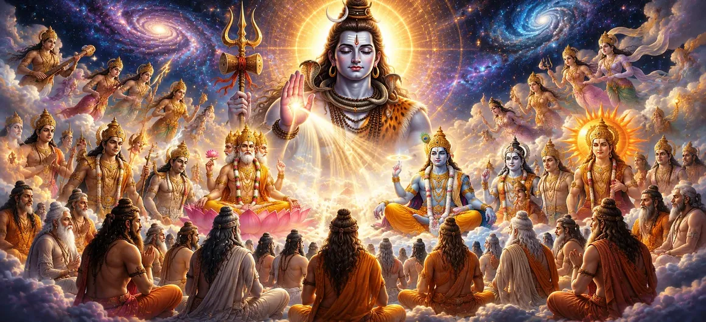

After revealing the divine origin of Time and the eternal cycle of the Four Yugas, the Shiva Purana turns to another sacred stage in the unfolding of creation. The universe had been established with its cosmic laws, Time had begun its eternal flow, and Dharma had been set as the guiding principle for all existence. Yet creation still required enlightened beings who would preserve divine knowledge, guide living souls, and protect the balance of the universe. Under the supreme command of Lord Shiva, Lord Brahma now began the glorious work of bringing forth the gods, the great sages, and other celestial beings. Each was created with a unique purpose and sacred responsibility. The gods would govern the forces of nature, while the sages would preserve eternal wisdom and guide humanity toward righteousness and liberation. काल की दिव्य उत्पत्ति और चार युगों के शाश्वत चक्र को प्रकट करने के बाद, शिव पुराण सृष्टि के विस्तार के एक और पवित्र चरण की ओर बढ़ता है। ब्रह्मांड अपने दिव्य नियमों के साथ स्थापित हो चुका था, काल अपनी अनंत गति आरंभ कर चुका था और धर्म को समस्त अस्तित्व का मार्गदर्शक सिद्धांत बनाया जा चुका था। फिर भी सृष्टि को ऐसे ज्ञानवान प्राणियों की आवश्यकता थी जो दिव्य ज्ञान की रक्षा करें, जीवात्माओं का मार्गदर्शन करें और ब्रह्मांड के संतुलन की रक्षा करें। भगवान शिव की सर्वोच्च आज्ञा से भगवान ब्रह्मा ने अब देवताओं, महान ऋषियों और अन्य दिव्य प्राणियों को प्रकट करने का पवित्र कार्य आरंभ किया। प्रत्येक को एक विशिष्ट उद्देश्य और पवित्र उत्तरदायित्व प्रदान किया गया। देवता प्रकृति की शक्तियों का संचालन करेंगे, जबकि ऋषि शाश्वत ज्ञान की रक्षा करेंगे और मानवता को धर्म तथा मोक्ष के मार्ग पर ले जाएंगे।
The creation of the gods and sages was not merely an act of increasing the population of the universe; it was the establishment of a divine system through which creation could flourish in harmony. Every deity became the guardian of a particular aspect of existence, while every sage became a beacon of spiritual wisdom whose teachings would illuminate countless generations. This sacred chapter reveals how the Supreme Lord, through Lord Brahma, organized the spiritual and celestial hierarchy that would guide the universe throughout every Yuga. It reminds devotees that behind every natural force, every sacred scripture, and every path of true knowledge stands the divine grace of Lord Shiva, the eternal source of all wisdom and creation. देवताओं और ऋषियों की सृष्टि केवल ब्रह्मांड की जनसंख्या बढ़ाने का कार्य नहीं था; यह उस दिव्य व्यवस्था की स्थापना थी जिसके माध्यम से सृष्टि सामंजस्य में फल-फूल सके। प्रत्येक देवता अस्तित्व के किसी विशेष पक्ष का संरक्षक बना, जबकि प्रत्येक ऋषि आध्यात्मिक ज्ञान का प्रकाशस्तंभ बना, जिसकी शिक्षाएं असंख्य पीढ़ियों को प्रकाशित करती रहीं। यह पवित्र अध्याय बताता है कि परमेश्वर की सर्वोच्च इच्छा के माध्यम से भगवान ब्रह्मा ने उस आध्यात्मिक और दिव्य व्यवस्था को कैसे संगठित किया जो प्रत्येक युग में ब्रह्मांड का मार्गदर्शन करती रही। यह भक्तों को स्मरण कराता है कि प्रत्येक प्राकृतिक शक्ति, प्रत्येक पवित्र शास्त्र और सच्चे ज्ञान के प्रत्येक मार्ग के पीछे भगवान शिव की दिव्य कृपा है, जो समस्त ज्ञान और सृष्टि के शाश्वत स्रोत हैं।
Empowered by the divine command of Lord Shiva, Lord Brahma began the next phase of creation with deep meditation upon the Supreme Lord. He understood that true creation could never arise from ego or personal desire but only through complete surrender to the will of Mahadeva. Every being he brought into existence reflected the wisdom, compassion, and order established by the Supreme Lord. Through this sacred process, Brahma became the visible creator of the universe, while Lord Shiva remained the invisible source from whom all creative power continuously flowed. भगवान शिव की दिव्य आज्ञा से शक्ति प्राप्त करके भगवान ब्रह्मा ने परमेश्वर का ध्यान करते हुए सृष्टि के अगले चरण का आरंभ किया। वे समझ गए कि सच्ची सृष्टि अहंकार या व्यक्तिगत इच्छा से नहीं, बल्कि महादेव की इच्छा के प्रति पूर्ण समर्पण से ही उत्पन्न हो सकती है। उनके द्वारा प्रकट किया गया प्रत्येक प्राणी परमेश्वर द्वारा स्थापित ज्ञान, करुणा और व्यवस्था को प्रतिबिंबित करता था। इस पवित्र प्रक्रिया के माध्यम से ब्रह्मा ब्रह्मांड के दृश्यमान सृष्टिकर्ता बने, जबकि भगवान शिव उस अदृश्य स्रोत के रूप में स्थित रहे, जिनसे समस्त सृजन-शक्ति निरंतर प्रवाहित होती रही।
From Lord Brahma emerged the great devas who would govern the countless forces of the universe. Each deity received a sacred responsibility according to the eternal plan of Lord Shiva. Some became guardians of light, others protected water, fire, wind, knowledge, prosperity, justice, and life itself. The Shiva Purana explains that the devas are not independent rulers. They faithfully perform their divine duties while remaining devoted servants of the Supreme Lord, ensuring that the universe continues in perfect harmony. भगवान ब्रह्मा से महान देवता प्रकट हुए, जो ब्रह्मांड की असंख्य शक्तियों का संचालन करने वाले थे। प्रत्येक देवता को भगवान शिव की शाश्वत योजना के अनुसार एक पवित्र उत्तरदायित्व प्रदान किया गया। कोई प्रकाश के रक्षक बने, तो किसी ने जल, अग्नि, वायु, ज्ञान, समृद्धि, न्याय और स्वयं जीवन की रक्षा का दायित्व संभाला। शिव पुराण बताता है कि देवता स्वतंत्र शासक नहीं हैं। वे अपने दिव्य कर्तव्यों को निष्ठापूर्वक निभाते हुए परमेश्वर के समर्पित सेवक बने रहते हैं और यह सुनिश्चित करते हैं कि ब्रह्मांड पूर्ण सामंजस्य में चलता रहे।
Alongside the gods, Lord Brahma also created the great sages (Rishis), who became the custodians of divine knowledge. They devoted themselves to meditation, austerity, and spiritual realization, preserving the eternal truths revealed by Lord Shiva. These enlightened sages became teachers of humanity, guiding kings, disciples, and future generations toward righteousness. Through their wisdom, the Vedas, sacred traditions, and spiritual disciplines continued to flourish throughout every age. देवताओं के साथ भगवान ब्रह्मा ने महान ऋषियों की भी सृष्टि की, जो दिव्य ज्ञान के संरक्षक बने। उन्होंने ध्यान, तपस्या और आध्यात्मिक अनुभूति के लिए स्वयं को समर्पित किया और भगवान शिव द्वारा प्रकट किए गए शाश्वत सत्य की रक्षा की। ये ज्ञानवान ऋषि मानवता के गुरु बने और राजाओं, शिष्यों तथा आने वाली पीढ़ियों को धर्म के मार्ग पर चलने का मार्गदर्शन दिया। उनके ज्ञान के माध्यम से वेद, पवित्र परंपराएं और आध्यात्मिक साधनाएं प्रत्येक युग में निरंतर विकसित होती रहीं।
Protect the universe and govern the forces of nature. ब्रह्मांड की रक्षा करना और प्रकृति की शक्तियों का संचालन करना।
Preserve spiritual wisdom and guide humanity toward Dharma. आध्यात्मिक ज्ञान की रक्षा करना और मानवता को धर्म का मार्ग दिखाना।
Lord Shiva remains the eternal source, protector, and supreme guide of all creation. भगवान शिव समस्त सृष्टि के शाश्वत स्रोत, रक्षक और सर्वोच्च मार्गदर्शक हैं।
Among the most glorious creations of Lord Brahma were the Seven Great Sages, known as the Saptarishis. These enlightened beings possessed extraordinary wisdom, unwavering devotion, and profound spiritual realization. They became the first teachers of humanity, preserving the eternal knowledge revealed by Lord Shiva and transmitting it to future generations. Their lives were dedicated to meditation, self-discipline, compassion, and the pursuit of Truth. Through their guidance, kings learned righteous governance, seekers discovered the path of liberation, and sacred knowledge continued to illuminate the world throughout every Yuga. भगवान ब्रह्मा की सबसे गौरवशाली सृष्टियों में सात महान ऋषि थे, जिन्हें सप्तर्षि कहा जाता है। ये ज्ञानवान महापुरुष असाधारण प्रज्ञा, अटूट भक्ति और गहन आध्यात्मिक अनुभूति से संपन्न थे। वे मानवता के प्रथम गुरु बने, भगवान शिव द्वारा प्रकट शाश्वत ज्ञान की रक्षा की और उसे आने वाली पीढ़ियों तक पहुंचाया। उनका जीवन ध्यान, आत्मसंयम, करुणा और सत्य की खोज के लिए समर्पित था। उनके मार्गदर्शन से राजाओं ने धर्मपूर्ण शासन सीखा, साधकों ने मुक्ति का मार्ग जाना और पवित्र ज्ञान प्रत्येक युग में संसार को प्रकाशित करता रहा।
Creation did not consist only of gods and sages. According to the Shiva Purana, numerous celestial beings also appeared to fulfill different responsibilities within the universe. Gandharvas spread divine music, Apsaras embodied beauty and artistic expression, while Yakshas, Siddhas, and other heavenly beings contributed to the harmony and prosperity of creation. Every celestial race possessed unique qualities, yet all remained united by one purpose—to serve the eternal will of Lord Shiva and preserve the sacred balance of the cosmos. सृष्टि केवल देवताओं और ऋषियों तक सीमित नहीं थी। शिव पुराण के अनुसार, अनेक दिव्य प्राणी भी ब्रह्मांड में विभिन्न उत्तरदायित्वों को पूरा करने के लिए प्रकट हुए। गंधर्वों ने दिव्य संगीत का प्रसार किया, अप्सराओं ने सौंदर्य और कलात्मक अभिव्यक्ति को प्रकट किया, जबकि यक्ष, सिद्ध और अन्य दिव्य प्राणियों ने सृष्टि के सामंजस्य और समृद्धि में योगदान दिया। प्रत्येक दिव्य जाति में विशिष्ट गुण थे, फिर भी सभी एक ही उद्देश्य से जुड़े थे—भगवान शिव की शाश्वत इच्छा की सेवा करना और ब्रह्मांड के पवित्र संतुलन को बनाए रखना।
With the appearance of the sages, divine knowledge began to spread throughout creation. The Vedas, sacred disciplines, rituals, and spiritual practices were preserved so that humanity would never lose its connection with the Supreme Lord. Knowledge became the light that dispelled ignorance and guided every sincere seeker toward self-realization. The Shiva Purana emphasizes that true wisdom is not measured by scholarship alone but by humility, devotion, and righteous conduct. Those who live according to divine knowledge become instruments of peace and compassion in the world. ऋषियों के प्राकट्य के साथ दिव्य ज्ञान समस्त सृष्टि में फैलने लगा। वेदों, पवित्र विधाओं, अनुष्ठानों और आध्यात्मिक साधनाओं की रक्षा की गई ताकि मानवता परमेश्वर के साथ अपने संबंध को कभी न खोए। ज्ञान वह प्रकाश बन गया जो अज्ञानता को दूर करता और प्रत्येक सच्चे साधक को आत्म-साक्षात्कार की ओर ले जाता। शिव पुराण इस बात पर बल देता है कि सच्चे ज्ञान का माप केवल विद्वत्ता नहीं, बल्कि विनम्रता, भक्ति और धर्मपूर्ण आचरण है। जो लोग दिव्य ज्ञान के अनुसार जीवन जीते हैं, वे संसार में शांति और करुणा के साधन बन जाते हैं।
The devas safeguard the natural order established by Lord Shiva. देवता भगवान शिव द्वारा स्थापित प्राकृतिक व्यवस्था की रक्षा करते हैं।
The sages preserve eternal wisdom for every generation. ऋषि प्रत्येक पीढ़ी के लिए शाश्वत ज्ञान की रक्षा करते हैं।
Every divine being fulfills its duty under the infinite guidance of Mahadeva. प्रत्येक दिव्य प्राणी महादेव के अनंत मार्गदर्शन में अपना कर्तव्य पूरा करता है।
Although the universe now contained countless gods, sages, celestial beings, and divine powers, the Shiva Purana makes one truth perfectly clear—they were never separate from one another. Every being, regardless of its position or responsibility, existed only to fulfill the eternal will of Lord Shiva. Diversity in creation did not produce division; instead, it revealed the infinite completeness of the Supreme Lord. The gods governed nature, the sages preserved wisdom, celestial beings inspired harmony, and humanity received the opportunity to practice Dharma. Together they formed one divine family working toward a single purpose—the preservation of righteousness and the spiritual evolution of all living beings. यद्यपि अब ब्रह्मांड में असंख्य देवता, ऋषि, दिव्य प्राणी और शक्तियां विद्यमान थीं, शिव पुराण एक सत्य को पूरी स्पष्टता से सामने रखता है—वे कभी भी एक-दूसरे से वास्तव में अलग नहीं थे। प्रत्येक प्राणी, चाहे उसका स्थान या उत्तरदायित्व कुछ भी हो, केवल भगवान शिव की शाश्वत इच्छा को पूर्ण करने के लिए अस्तित्व में था। सृष्टि की विविधता ने विभाजन उत्पन्न नहीं किया; इसके विपरीत, उसने परमेश्वर की अनंत पूर्णता को प्रकट किया। देवताओं ने प्रकृति का संचालन किया, ऋषियों ने ज्ञान की रक्षा की, दिव्य प्राणियों ने सामंजस्य को प्रेरित किया और मानवता को धर्म का पालन करने का अवसर मिला। इन सभी ने मिलकर एक दिव्य परिवार का रूप लिया, जो एक ही उद्देश्य की ओर कार्य कर रहा था—धर्म की रक्षा और सभी जीवों के आध्यात्मिक उत्कर्ष का मार्ग प्रशस्त करना।
After receiving their sacred responsibilities, the gods and the great sages bowed before Lord Brahma with gratitude. Lord Brahma himself offered all honor to Lord Shiva, acknowledging that every power, every form of wisdom, and every act of creation originated from the Supreme Lord alone. Thus, the divine beings began their eternal service with humility and devotion. Their example teaches that true greatness is found not in power or knowledge alone, but in selfless service to God and compassion toward all living beings. अपने पवित्र उत्तरदायित्व प्राप्त करने के बाद देवताओं और महान ऋषियों ने कृतज्ञता के साथ भगवान ब्रह्मा को प्रणाम किया। भगवान ब्रह्मा ने स्वयं भगवान शिव को समस्त सम्मान अर्पित करते हुए स्वीकार किया कि प्रत्येक शक्ति, प्रत्येक ज्ञान का स्वरूप और सृष्टि का प्रत्येक कार्य केवल परमेश्वर से ही उत्पन्न हुआ है। इस प्रकार दिव्य प्राणियों ने विनम्रता और भक्ति के साथ अपनी शाश्वत सेवा आरंभ की। उनका उदाहरण सिखाता है कि सच्ची महानता केवल शक्ति या ज्ञान में नहीं, बल्कि ईश्वर के प्रति निःस्वार्थ सेवा और सभी जीवों के प्रति करुणा में है।
The eternal source, supreme ruler, and foundation of all creation. शाश्वत स्रोत, सर्वोच्च शासक और समस्त सृष्टि के आधार।
The creator entrusted with manifesting the universe. ब्रह्मांड को प्रकट करने का उत्तरदायित्व प्राप्त सृष्टिकर्ता।
Protectors of nature, Dharma, and cosmic balance. प्रकृति, धर्म और ब्रह्मांडीय संतुलन के रक्षक।
Guardians of divine wisdom and teachers of humanity. दिव्य ज्ञान के संरक्षक और मानवता के गुरु।
"The gods protect creation, the sages preserve wisdom, yet every power shines only through the infinite grace of Lord Shiva." "देवता सृष्टि की रक्षा करते हैं, ऋषि ज्ञान की रक्षा करते हैं, फिर भी प्रत्येक शक्ति केवल भगवान शिव की अनंत कृपा से प्रकाशित होती है।"
The gods, sages, and celestial beings have now accepted their sacred responsibilities within the divine order established by Lord Shiva. Continue to the next chapter to discover the deeper purpose behind creation itself and understand why the Supreme Lord brought the universe into existence. देवताओं, ऋषियों और दिव्य प्राणियों ने अब भगवान शिव द्वारा स्थापित दिव्य व्यवस्था में अपने पवित्र उत्तरदायित्व स्वीकार कर लिए हैं। अगले अध्याय में आगे बढ़ें और सृष्टि के गहन उद्देश्य को जानें तथा समझें कि परमेश्वर ने इस ब्रह्मांड को अस्तित्व में क्यों प्रकट किया।